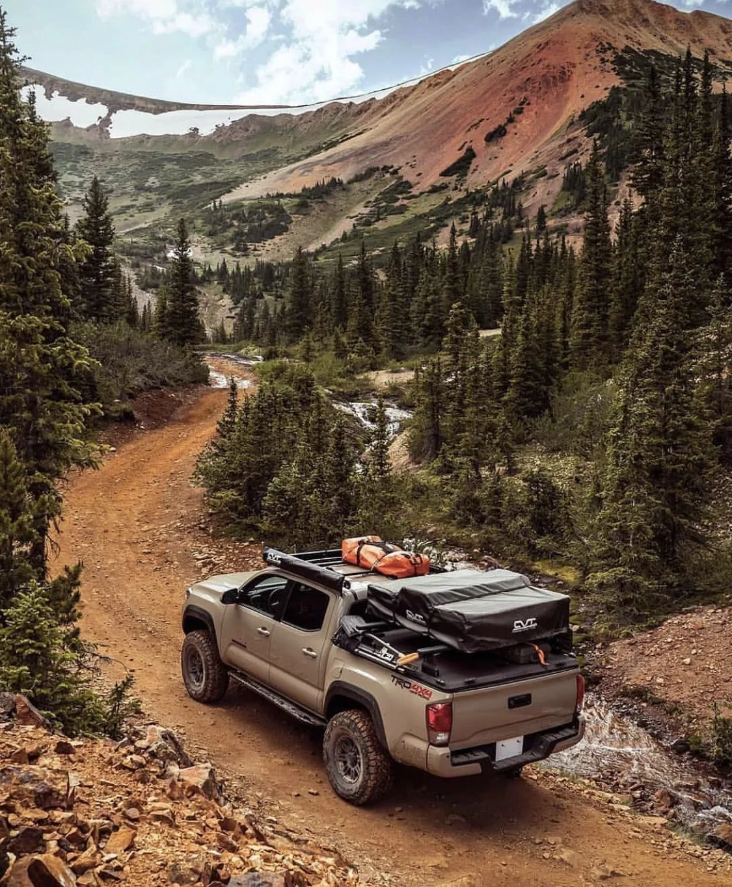

Built for the long road
Not a shop.
A route.
VASBYT exists for people who pack properly, travel further and choose gear that earns its place on the vehicle.
The idea.
Most 4x4 websites behave like catalogues. VASBYT is built as a product discovery system for South African roads, campsites and recovery days.
Customers can search by problem, trip, product type or route — then send a WhatsApp quote for stock, fitment, courier and payment confirmation.
